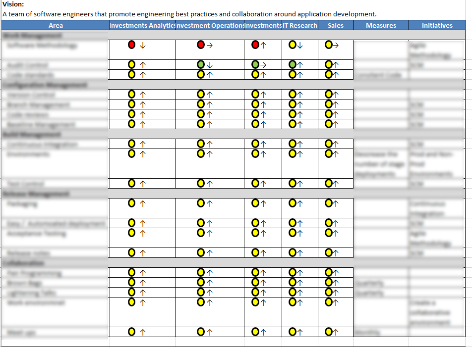

Software Engineering Standards
Just Starting
What to expect
Clear Measure Assessment
June 2015
Software Engineering
- Planning
- Management
- Software Configuration Management *
- Development *
- Quality Assurance
The document will be complied into one or more well known locations.

I would like to join a single project from your team for evaluation.
Standard
Source Control => Stash
for all active development
Standard
Collective Code Ownership
for all active development
Shift to Open Source Style of Development
Changes will be managed by pull requests approvals
Meeting with All Dev Leadership
- Nelson's Team
- Freeman's Team
- Dillards's Team
- Research Not Included
Will give SE "Kick-Off" presentation to all developers.
Summary
- Beginning to Formalize SE Standards
- Continue Clear Measure Evaluation
- SE Standards => Well Known Location
- All Source Control to BitBucket
- Shift to Open Source